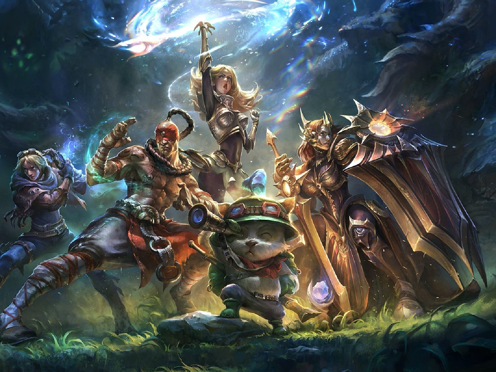
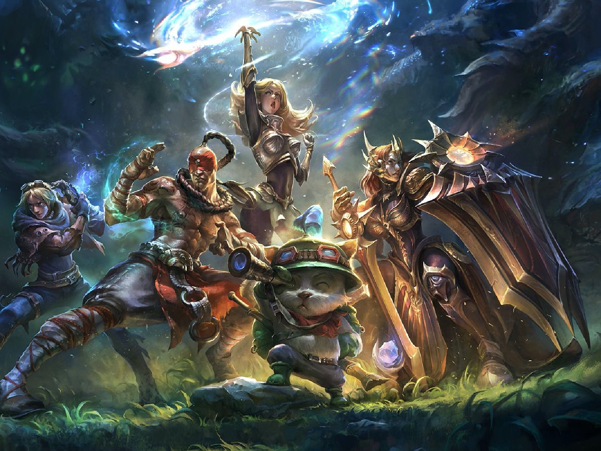

Ya casi terminamos, solo dos preguntas más y daremos por finalizado el juego.
¿Ganarás? ¿Perderás? Ahora lo descubriremos
VIDEOJUEGOS
Videojuego de construcción de tipo «mundo abierto» o sandbox creado originalmente por
el sueco Markus Persson, y posteriormente desarrollado por Mojang Studios.
¿De que juego estamos hablando?

 
